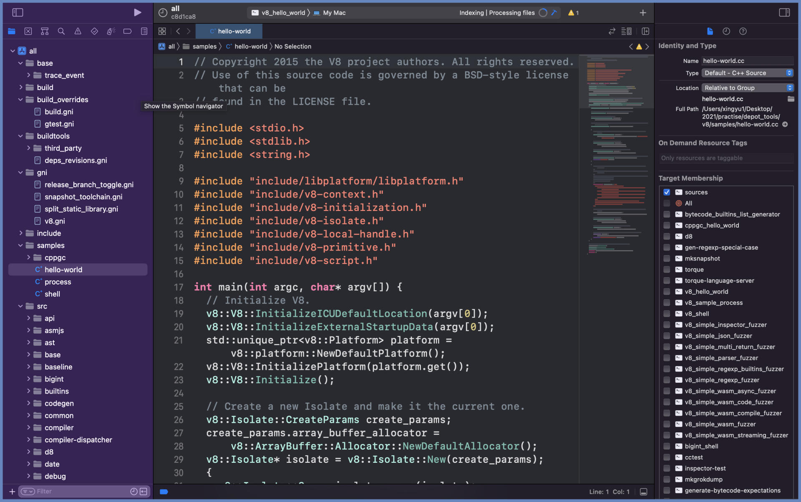
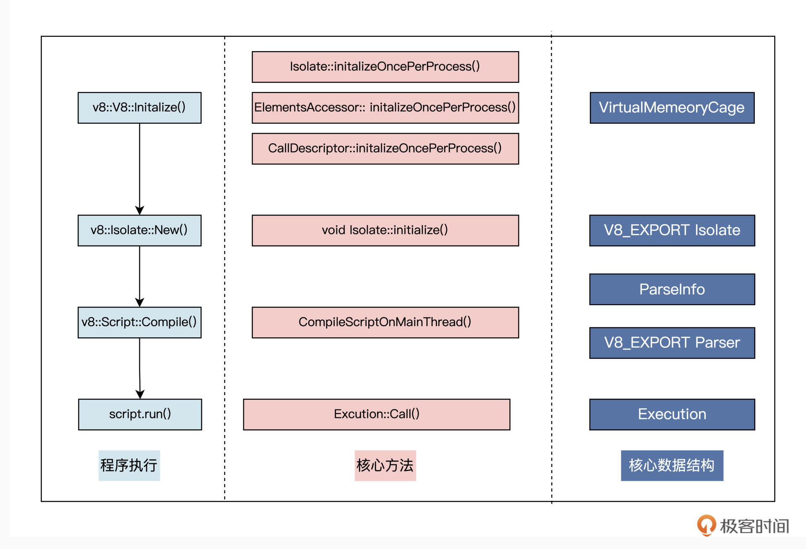
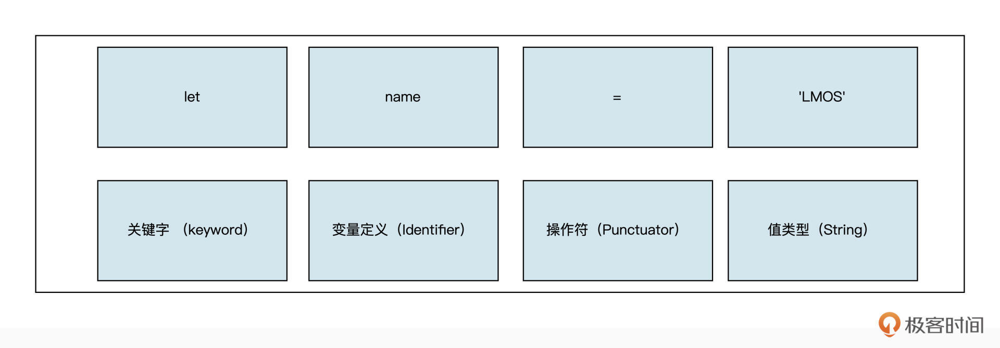
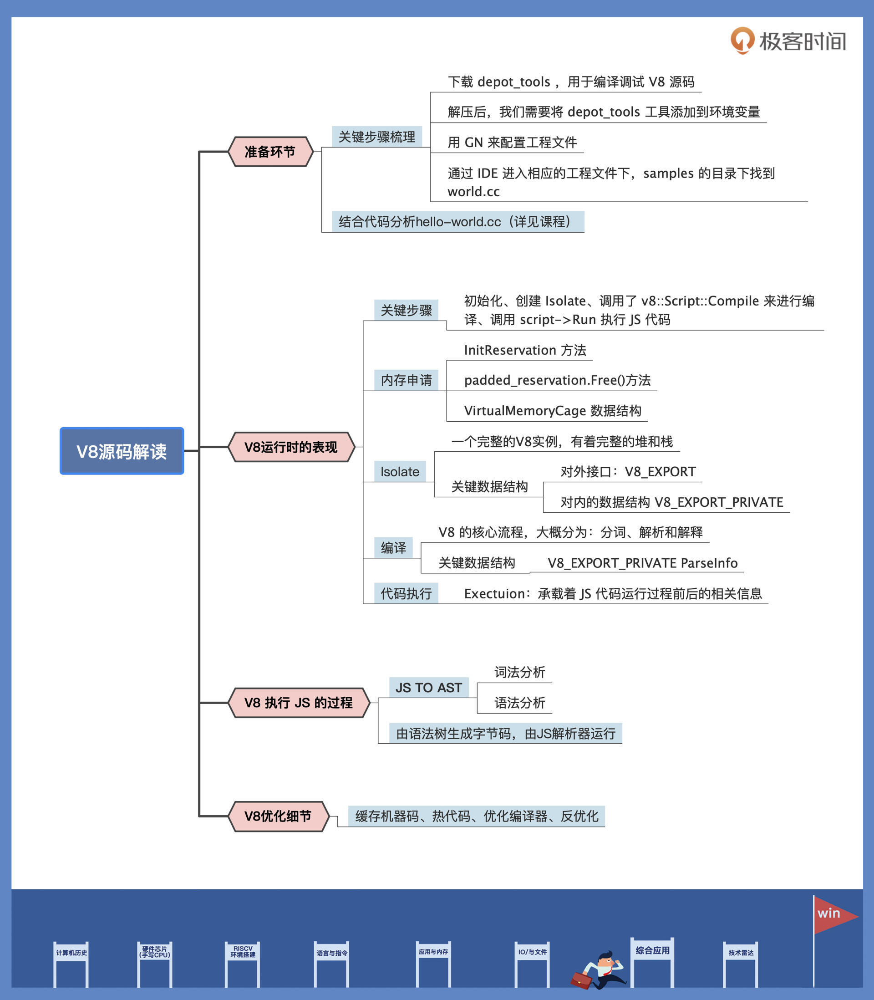

- 00 开篇词 练好基本功，优秀工程师成长第一步.md
- 01 CISC & RISC：从何而来，何至于此.md
- 02 RISC特性与发展：RISC-V凭什么成为“半导体行业的Linux”？.md
- 03 硬件语言筑基（一）：从硬件语言开启手写CPU之旅.md
- 04 硬件语言筑基（二）_ 代码是怎么生成具体电路的？.md
- 05 指令架构：RISC-V在CPU设计上到底有哪些优势？.md
- 06 手写CPU（一）：迷你CPU架构设计与取指令实现.md
- 07 手写CPU（二）：如何实现指令译码模块？.md
- 08 手写CPU（三）：如何实现指令执行模块？.md
- 09 手写CPU（四）：如何实现CPU流水线的访存阶段？.md
- 10 手写CPU（五）：CPU流水线的写回模块如何实现？.md
- 11 手写CPU（六）：如何让我们的CPU跑起来？.md
- 12 QEMU：支持RISC-V的QEMU如何构建？.md
- 13 小试牛刀：跑通RISC-V平台的Hello World程序.md
- 14 走进C语言：高级语言怎样抽象执行逻辑？.md
- 15 C与汇编：揭秘C语言编译器的“搬砖”日常.md
- 16 RISC-V指令精讲（一）：算术指令实现与调试.md
- 17 RISC-V指令精讲（二）：算术指令实现与调试.md
- 18 RISC-V指令精讲（三）：跳转指令实现与调试.md
- 19 RISC-V指令精讲（四）：跳转指令实现与调试.md
- 20 RISC-V指令精讲（五）：原子指令实现与调试.md
- 21 RISC-V指令精讲（六）：加载指令实现与调试.md
- 22 RISC-V指令精讲（七）：访存指令实现与调试.md
- 23 内存地址空间：程序中地址的三种产生方式.md
- 24 虚实结合：虚拟内存和物理内存.md
- 25 堆&栈：堆与栈的区别和应用.md
- 26 延迟分配：提高内存利用率的三种机制.md
- 27 应用内存管理：Linux的应用与内存管理.md
- 28 进程调度：应用为什么能并行执行？.md
- 29 应用间通信（一）：详解Linux进程IPC.md
- 30 应用间通信（二）：详解Linux进程IPC.md
- 31 外设通信：IO Cache与IO调度.md
- 32 IO管理：Linux如何管理多个外设？.md
- 33 lotop与lostat命令：聊聊命令背后的故事与工作原理.md
- 34 文件仓库：初识文件与文件系统.md
- 35 Linux文件系统（一）：Linux如何存放文件？.md
- 36 Linux文件系统（二）：Linux如何存放文件？.md
- 37 浏览器原理（一）：浏览器为什么要用多进程模型？.md
- 38 浏览器原理（二）：浏览器进程通信与网络渲染详解.md
- 39 源码解读：V8 执行 JS 代码的全过程.md
- 40 内功心法（一）：内核和后端通用的设计思想有哪些？.md
- 41 内功心法（二）：内核和后端通用的设计思想有哪些？.md
- 42 性能调优：性能调优工具eBPF和调优方法.md
- 先睹为快：迷你CPU项目效果演示.md
- 加餐01 云计算基础：自己动手搭建一款IAAS虚拟化平台.md
- 加餐02 学习攻略（一）：大数据&云计算，究竟怎么学？.md
- 加餐03 学习攻略（二）：大数据&云计算，究竟怎么学？.md
- 加餐04 谈谈容器云与和CaaS平台.md
- 加餐05 分布式微服务与智能SaaS.md
- 国庆策划01 知识挑战赛：检验一下学习成果吧！.md
- 国庆策划02 来自课代表的学习锦囊.md
- 国庆策划03 揭秘代码优化操作和栈保护机制.md
- 温故知新 思考题参考答案（一）.md
- 用户故事 我是怎样学习Verilog的？.md
- 结束语 心若有所向往，何惧道阻且长.md
39 源码解读：V8 执行 JS 代码的全过程
你好，我是LMOS。
前面我们学习了现代浏览器架构，也大致了解了浏览器内核的工作原理。在浏览器的内核中，V8 是一个绕不开的话题。在浏览器中，Chrome 的重要地位不用赘述，而V8不仅是 Chrome 的核心组件，还是 node.js 等众多软件的核心组件，所以，V8的重要程度亦不用多言。
不过，V8涉及到的技术十分广泛，包括操作系统、编译技术、计算机体系结构等多方面知识，为了带你先从宏观角度系统学习和了解V8项目，这节课我会从源码理解讲起，带你了解了V8 执行 JS 代码的全过程。
如何阅读 V8 源码和搭建 V8 开发环境
前面两节课，我带你简单了解了 Chromium 和 Webkit 项目的目录结构，在这里我们继续看一下如何学习 V8 源码。
Chromium 项目中包含了可运行的 V8 源码，但是从调试的角度看，我们一般使用 depot_tools来编译调试 V8 源码，它是V8的编译工具链，下载和编译代码都需要用到它，你可以直接点击 depot_tools bundle 下载。
解压后，我们需要将 depot_tools 工具添加到环境变量，注意这些操作需要你保证本机可以访问 Google 浏览器。
我们以 Mac 系统为例，添加到环境变量的代码命令如下：
export PATH=`pwd`/depot_tools:"$PATH"
然后，你可以在命令行中测试 depot_tools 是否可以使用：
gclient sync
下载完 depot_tools 后，我们就可以下载 V8 代码进行编译调试了“
mkdir v8
cd v8
fetch v8
cd v8/src
下载好 V8 源码后，我们需要使用 GN 来配置工程文件。下面是我们用到的几个编译的参数：
is_component_build = true // 编译成动态链接库以减少体积
is_debug = true // 开启调试
v8_optimized_debug = true // 关闭一些代码优化
symbol_level = 0 将所有的debug符号放在一起，加速二次编译和链接过程;
ide=vs2022 / ide=xcode // 选择编译 IDE
我们这节课就不展开讲解 gn 命令了，如果你有兴趣了解更多内容，可以自行查阅资料。说回正题，我们继续聊配置工作。
Windows 的配置情况如下 ：
gn gen out.gn/x64.release --args='is_debug=true target_cpu="x64" v8_target_cpu="arm64" use_goma=true is_component_build=true v8_optimized_debug = true symbol_level = 0'
我们再来看看 Mac 下的情况，Mac 下我们需要更新 xcode 依赖，代码如下：
sudo xcode-select -s /Applications/Xcode.app/Contents/Developer
gn gen out/gn --ide=xcode
执行完成后，我们可以通过 IDE 进入相应的工程文件下，后面是我的操作截图，供你参考：

我们看到，在工程文件下有一个名为 samples 的目录，上图中打开的文件 hello-world.cc 也是这个目录下的一个文件，它是 V8 项目中的一个实例文件，我们后面的学习也会从hello-world.cc文件入手。
我们来看一下这个文件的具体代码：
int main(int argc, char* argv[]) {
// Initialize V8.
v8::V8::InitializeICUDefaultLocation(argv[0]);
v8::V8::InitializeExternalStartupData(argv[0]);
std::unique_ptr<v8::Platform> platform = v8::platform::NewDefaultPlatform();
v8::V8::InitializePlatform(platform.get());
v8::V8::Initialize();
// Create a new Isolate and make it the current one.
v8::Isolate::CreateParams create_params;
create_params.array_buffer_allocator =
v8::ArrayBuffer::Allocator::NewDefaultAllocator();
v8::Isolate* isolate = v8::Isolate::New(create_params);
{
v8::Isolate::Scope isolate_scope(isolate);
// Create a stack-allocated handle scope.
v8::HandleScope handle_scope(isolate);
// Create a new context.
v8::Local<v8::Context> context = v8::Context::New(isolate);
// Enter the context for compiling and running the hello world script.
v8::Context::Scope context_scope(context);
{
// Create a string containing the JavaScript source code.
v8::Local<v8::String> source =
v8::String::NewFromUtf8Literal(isolate, "'Hello' + ', World!'");
// Compile the source code.
v8::Local<v8::Script> script =
v8::Script::Compile(context, source).ToLocalChecked();
// Run the script to get the result.
v8::Local<v8::Value> result = script->Run(context).ToLocalChecked();
// Convert the result to an UTF8 string and print it.
v8::String::Utf8Value utf8(isolate, result);
printf("%s\n", *utf8);
我们简单看看 hello-world.cc 这个文件，它是用 C++ 程序编写的，主要做了下面几件事：
- 初始化了 V8 程序；-
- 运行了一段基于 JavaScript 语言程序的 “hello world” 并输出；-
- 运行了一段基于 JavaScript 语言程序的加法运算并输出；-
- 执行完成后卸载了 V8。
上节课我们有提到，V8 是一个 JS 的执行引擎，在这个 helloworld 的代码中，除去运行JS 代码的两部分，其它的代码都是为 JS 代码运行提供的准备工作。
我们现在就看一下运行时都做了哪些基本的准备工作。
V8 在运行时的表现
上面代码是 hello-world 代码的主函数，也是核心的部分。我们梳理一下关键过程有哪些：首先hello- world代码的主函数调用了 v8::V8::Initialize() 方法对 V8 进行初始化；然后，调用了 v8::Isolate::New 来创建 Isolate；接着，创建完成后调用了 v8::Script::Compile 来进行编译；最后，调用 script->Run 用来执行 JS 代码。
我们后面会围绕上述关键过程做分析。你可以结合下面这张图，看看 hello-world.cc 的执行过程，还有这个过程里涉及到的核心方法和重要数据结构。

好，让我们进入具体分析环节，先从内存申请开始说起。
V8启动时的内存申请
申请内存从 InitReservation 方法开始，它主要处理的操作就是为 V8 引擎向 OS 申请内存，代码在 src/utils/allocation.cc 这个目录中：
// Reserve a region of twice the size so that there is an aligned address
// within it that's usable as the cage base.
VirtualMemory padded_reservation(params.page_allocator,
params.reservation_size * 2,
reinterpret_cast<void*>(hint));
if (!padded_reservation.IsReserved()) return false;
// Find properly aligned sub-region inside the reservation.
Address address =
VirtualMemoryCageStart(padded_reservation.address(), params);
CHECK(padded_reservation.InVM(address, params.reservation_size));
申请内存的时候，InitReservation 会先申请两倍的内存，保证内存对齐，再从两倍内存中找到一个适合对齐地址，这是 V8 真正使用的内存地址。这块申请出来的内存后面的工作里用得上。完成申请后，还会再调用 padded_reservation.Free() 方法，将刚开始申请的内存释放掉。
下面我带你看看 VirtualMemoryCage 数据结构，它是 V8 内存管理的主要数据结构。V8的内存方式采用的段页式，和 OS 的内存数据结构比较类似，但区别是 V8 只有一个段，OS 会有多段，但是 V8 会有很多页。
VirtualMemeoryCage 的数据结构位于allocation.h 文件中，如下所示：
// +------------+-----------+----------- ~~~ -+
// | ... | ... | ... |
// +------------+-----------+------------ ~~~ -+
// ^ ^ ^
// start cage base allocatable base
//
// <------------> <------------------->
// base bias size allocatable size
// <-------------------------------------------->
// reservation size
reservation size 是 V8 实际申请的内存，start 是内存基址，cage base 是页表的位置，allocatable 是 V8 可分配内存的开始，用来创建 Isolate。
Isolate
Isolate是一个完整的V8实例，有着完整的堆和栈。V8是虚拟机，Isolate才是运行JavaScript的宿主。一个Isolate是一个独立的运行环境，包括但不限于堆管理器（heap）、垃圾回收器（GC）等。
在同一个时间，有且只有一个线程能在Isolate中运行代码，也就是说同一时刻，只有一个线程能进入Iisolate，而多个线程可以通过切换来共享同一个Isolate。
Isolate 对外的接口是 V8_EXPORT ，定义在 include/v8.h 文件中，其他程序可以调用它。这个接口也可以理解为JavaScript的运行单元，多个线程也就是多个任务，它们可以共享一个运行单元，主要涉及到几个 V8 的概念：
- Context：上下文，所有的JS代码都是在某个V8 Context中运行的。
- Handle：一个指定JS对象的索引，它指向此JS对象在V8堆中的位置。
- Handle Scope：包含很多handle的集合，用来统一管理多个handle，当Scope被移出堆时，它所管理的handle集合也会被移除。
Isolate 还有一个对内的数据结构 V8_EXPORT_PRIVATE，也是一个核心的数据结构，内部的很多重要的结构都会用到它，后面编译流程我还会讲到。
编译
V8 的编译流程也是 V8 的核心流程，我们先简单看下编译的大概流程：
- tokenize （分词）：将 JS 代码解析为 Token 流，Token 是语法上的不可拆分的最小单位；
- parse （解析）：语法分析，将上一步生成的 token 流转化为 AST 结构，AST 被称为抽象语法树；
- ignite （解释）：通过解释器，生成字节码。
接着，我们再看看这个过程的关键数据结构 V8_EXPORT_PRIVATE ParseInfo，代码在 src/parsing/parse-info.cc 目录下：
ParseInfo 这个数据结构就是JS 代码生成token，再生成 AST 的过程，AST 的数据结构位置在 src/ast/ast.h。
生成 AST后，解释器会根据 AST生成字节码，并解释执行字节码。字节码是介入 AST和机器码之间的一种数据结构，你先留个印象，我们后面再详细说。
代码执行
经过编译，最终生成了字节码。我们继续来看 Exectuion 这个数据结构，这个结构承载着 JS 代码运行过程前后的相关信息：
class Execution final : public AllStatic {
public:
// Whether to report pending messages, or keep them pending on the isolate.
enum class MessageHandling { kReport, kKeepPending };
enum class Target { kCallable, kRunMicrotasks };
// Call a function, the caller supplies a receiver and an array
// of arguments.
//
// When the function called is not in strict mode, receiver is
// converted to an object.
//
V8_EXPORT_PRIVATE V8_WARN_UNUSED_RESULT static MaybeHandle<Object> Call(
Isolate* isolate, Handle<Object> callable, Handle<Object> receiver,
int argc, Handle<Object> argv[]);
通过前面关键过程和数据结构的讲解，相信你已经基本了解了 V8 运行时的核心流程，下面我们从宏观层面看一下这个过程。
V8 编译 —— V8 执行 JS 的过程
JS代码是给人看的，并不能由机器直接运行，需要很多中间步骤的转换，执行这些步骤的就是JS解析器。
主要过程是这样：首先对JS源代码进行词法分析，将源代码拆分成一个个简单的词语（即Token）；然后，以这些Token为输入流进行语法分析，形成一棵抽象语法树（即AST），并检查其语法上的错误；最后，由语法树生成字节码，由JS解析器运行。下面我们分别讨论这几个步骤。
词法分析
词法分析是将 JS 代码拆分成对应的 Token，Token 是能拆分的最小单位，固定 type 表述类型/属性，value 表示对应的值，如下图 Token。

[{
"type": "Keyword",
"value": "let"
}, {
"type": "Identifier",
"value": "name"
}, {
"type": "Punctuator",
"value": "="
}, {
"type": "string",
"value": "LMOS"
}]
语法分析
在进行词法分析转为 Token 之后，解析器会继续根据生成的 Token 生成对应的 AST。说起AST，相信前端同学并不陌生，也是热词之一，无论是在 Vue、React 中表示虚拟 DOM ，或者表示 Babel 对 JS 的转译，都需要先将其转化为对应的 AST。
字节码
在解析器（Parser）将 JS 代码解析成 AST 之后，解释器（Ignition）根据 AST 来生成字节码（也称中间码）。前文提到 CPU 只能识别机器码，对字节码是识别不了的，这里就衍生出一个问题，如果 CPU 识别不了字节码，那为什么还要在中间插一步来耗费资源转成字节码呢？效率不是很低吗？
在计算机学科里聊效率，都逃避不了时间和空间这两个概念，绝大部分的优化都是空间换时间或时间换空间，两者的平衡，效率如何达到最高，是一个很值得深入研究的问题。
拿之前版本的 V8 引擎执行 JS 来说，是没有转字节码这一步骤的，而是直接从 AST 转成机器码，这个过程称为编译过程，所以每次拿到 JS 文件的时候，首先都会编译，而这个过程还是比较浪费时间的，这是一件比较头疼的事情，需要一个解决办法。
V8 中的优化细节
V8 执行 JS 的主要过程我们说完了，其实在这个过程中，V8 利用 JIT 的能力做了很多方面的优化，现在我们看一下具体有哪些。
缓存机器码
一个网页只要第一次打开过，关闭再次去打开，大部分情况下，还是和原来 JS 文件一致的，除非开发者修改了代码，但这个可以暂时不考虑。毕竟哪个网站也不会一天闲得无聊，不停地修改，上传替换。
按照这个思路，既然绝大多数情况下，文件不会修改，那编译后的机器码可以考虑缓存下来，这样一来，下次再打开或者刷新页面的时候就省去编译的过程了，可以直接执行了。
存储机器码可以分成两种情况：一个是浏览器未关闭时候，直接存储到浏览器本地的内存中；一个是浏览器关闭了，直接存储在磁盘上，而早期的 V8 也确实是这么做的，典型的牺牲空间换时间。
热代码
在代码中，常常会有同一部分代码，被多次调用，同一部分代码如果每次都需要解释器转二进制代码再去执行，效率上来说，会有些浪费，所以在 V8 模块中会有专门的监控模块，来监控同一代码是否多次被调用，如果被多次调用，那么就会被标记为热代码，这有什么作用呢？我们继续往下看。
优化编译器
TurboFan (优化编译器) 这个词，相信关注手机界的同学并不陌生，华为、小米等这些品牌，在近几年产品发布会上都会出现这个词，主要的能力是通过软件计算能力来优化一系列的功能，使得效率更优。
接着热代码继续说，当存在热代码的时候，V8 会借助 TurboFan 将为热代码的字节码转为机器码并缓存下来，这样一来，当再次调用热代码时，就不再需要将字节码转为机器码。当然，热代码相对来说还是少部分的，所以缓存也并不会占用太大内存，并且提升了执行效率，同样此处也是牺牲空间换时间。
反优化
JS 语言是动态语言，非常之灵活，对象的结构和属性在运行时是可以发生改变的，我们设想一个问题：如果热代码在某次执行的时候，突然其中的某个属性被修改了，那么编译成机器码的热代码还能继续执行吗？
答案是肯定不能。这个时候就要使用到优化编译器的反优化了，它会将热代码退回到 AST 这一步，这个时候解释器会重新解释执行被修改的代码；如果代码再次被标记为热代码，那么会重复执行优化编译器的这个步骤。
总结
这节课我们先通过编译源码的方式搭建了 V8 的环境，又通过 V8 项目中的 hello_world 项目一步步学习了 V8 执行 JS代码的过程，最后，我们又从宏观角度了解了 V8 执行 JS 代码的全过程。
这节课的要点，你可以结合后面的导图看一下。

在这个过程中，我们通过 V8 项目的关键代码和数据结构深入的了解了 V8 这个项目。在学习一个开源巨石项目的过程中，我们要掌握一定的学习方式，切不可以在初学习的阶段就过度自底而上地纠结于各种代码细节。
我们可以通过这样的方式进行学习：
- 初步建立印象：自顶而上的了解项目的结构和架构，形成一个初步的宏观视觉；
- 梳理主线：进入程序源码的角度，理解代码的主要脉络，建议从一个简单的例子入手；
- 关注重要过程：关注过程中的关键代码输入输出，运行过程中的几个重要中间阶段、重要中间结果和数据结构；
- 查漏补缺：补充细节知识点的查漏补缺，结合自己情况深入学习。
V8 在执行 JS 的过程中又可以进行很多优化，具体方式就是在运行 JS 过程中持续记录代码语句执行情况，以及变量类型的变化情况。若推测代码执行次数较多（热点代码）且变量类型较固定时，就会调用优化器优化这部分代码，缓存这部分机器码 + 跳过这部分类型判断逻辑，从而实现性能优化。
思考题
V8 在执行 JS 的过程中可以做哪些性能优化？
欢迎你在留言区与我交流讨论，也推荐你把课程分享给更多朋友。
© 2019 - 2023 Liangliang Lee. Powered by Vert.x and hexo-theme-book.